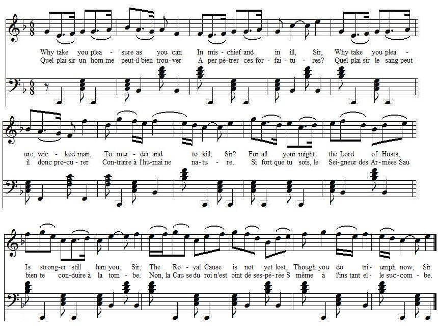

Why take you pleasure
Quel plaisir peut-on trouver
Address to Cumberland after Culloden
Adresse à Cumberland après Culloden
from
"The True Loyalist"
, 1779, page 56.
Tune - Mélodie
"Bessy Bell"
Variant
<
from "
The Beggar's Opera
"
Sequenced by Christian Souchon
|
To the tune:
"A tune by this name was included: - in Playford's 1700 collection of Scottish dance tunes , - in Thomson's Orpheus Caledonius (1725), first edition , where it is credited to David Rizzio, but in the second edition the ascription was removed. - John Gay uses the melody in his Beggar's Opera (1729) where it appears under the title "A curse attends that woman's love." - The tune was used as an early vehicle for the song “Vicar of Bray,” as published in Walsh’s British Musical Miscellany (vol. I, 1734) ... The words to the song go, in part: O Bessie Bell an' Mary Gray! They were twa bonnie lasses, They biggit a bower on yon burn-brae, An' theekit it owre wi' rashes. They theekit it owre wi' rashes green. They happit it roun' wi' heather; But the pest cam' frae the Burrow-toun An' slew them baith thegither. |
 |
A propos de la mélodie:
"On trouve une mélodie de ce nom: - dans le Recueil de Playford d'airs à danser écossais de 1700 . - dans la 1ère édition de l' Orphée Calédonien de Thomson, (1725) où elle est attribuée à David Rizzio, attribution non confirmée dans l'édition suivante. - John Gay l'utilise dans son "Opéra du Gueux" (1729) pour accompagner l'air " "Il pèse une malédiction sur l'amour de cette femme" . - Elle a très tôt servi de timbre pour le chant "Le Vicaire de Bray" publié dans les Miscellanées musicales britanniques de Walsh (vol. I, 1734) ... Voici le début des paroles de cette chanson: Oh, Marie Gray et Bessy Bell Etaient de belles demoiselles Elles ont bâti sur ce coteau Un cottage au toit de roseaux. De roseaux verts l'ont recouvert Et l'ont tapissé de bruyères Mais la peste vint de Burrow Et les a mises au tombeau... |
|
Tradition has it that Bessy Bell and Mary Gray were young women, daughters of local Perthshire gentry, who attempted to escape the plague ravaging the countryside in the year 1645. It had begun in the south and gradually spread northward, crossing the border to ravage first Kelso and then Edinburgh. By August of the year it had reached Perth, where more than 3,000 people died, straining the limits of the towns' resources so much that many of the corpses were left to rot in the streets. Numerous of the more well-to-do of the region fled to the countryside, hoping to ride out the contagion.
Mary and Bessy fled to a ‘bower’ located a mile from Lynedoch House, the home of Mary Gray. They were visited on occasion by a youth of their acquaintance, a lover of Bessie’s, who brought them food and other supplies from the town of Perth. On one of his visits he brought his love a token, a lace handkerchief or a string of pearls that he had obtained from the corpse of a plague victim. Bessy soon took ill, and in nursing her, so did Mary. They died in each others arms. Unfortunately, their bodies were not admitted to either the town or to family plots because of the plague and they were left as they lay. Later, after the plague subsided, they were buried together. Later the gravesite was improved with iron railings and a large stone, on which was carved: “They lived, they loved, they died.” Source "The Fiddler's Companion" (cf. Links). |
D'après la légende, Bessy Bell et Mary Gray étaient deux jeunes femmes de la haute société du Perthshire, qui tentèrent d'échapper à l'épidémie qui se déclara dans la région en 1645. Partie du sud, elle gagnait peu à peu vers le nord jusqu'à entrer en Ecosse et frapper Kelso puis Edimbourg. En août elle avait atteint Perth où elle décima plus de 3000 personnes, un nombre tel que les édiles, submergés, laissaient les cadavres à l'abandon dans les rues. Beaucoup de gens aisés se réfugièrent dans les campagnes, pensant ainsi échapper à la contagion.
Mary et Bessy s'enfermèrent dans un cottage situé à une lieue de Lynedoch House, la maison natale de Mary Gray. Elles recevaient de temps à autre la visite d'un jeune homme, amoureux de Bessie, qui leur apportait de Perth de quoi subsister. Lors d'une de ces visites, il apporta à sa belle un gage d'amour, un mouchoir de dentelle ou un collier de perles prélevé sur un cadavre. Bessy tomba aussitôt malade, bientôt suivie par Mary qui voulait la soigner. Elles moururent dans les bras l'une de l'autre. Le malheur voulut qu'on interdise le transfert de leurs corps vers la ville ou dans les concessions familiales à cause de l'épidémie et ils furent enterrés sur place. Plus tard on ajouta à leur tombe une clôture en fer et une stèle où l'on grava: "Elles ont vécu, elles ont aimé, elles sont mortes". Source "The Fiddler's Companion" (cf. Liens). |

|
A SONG
to the tune of Bessy Bell 1. Why take you pleasure as you can In mischief and in ill, Sir, Why take you pleasure, wicked man, To murder and to kill, Sir? For all your might, the Lord of Hosts, Is stronger still than you, Sir; The Royal Cause is not yet lost, Though you do triumph now, Sir. 2. Though you despise the law of God, You and your wicked band, Sir; He will with an avenging rod Scourge both out of the land, Sir: I'm not a prophet, nor his son, But mark I this foretell, Sir; The wrath of God shall fall upon Those monsters come from hell, Sir. 3. Your nets for us you do prepare To bring us to a halter; Yourself may fall into that snare, And catch perhaps a Tartar: If winds prove fair, to bring from Fr[a]nce, The Monsieurs to us over, We'll teach your Billie how to dance, And chase you to Hanover. 4. Were numbers equal but, You'd have no time to rally; Nor would you be, young man, so stout, But run like C[o]pe and Ha[wle]y: But three to one at any game, Is odds to win at a' times; Why brag you such unequal gain, O! fy for shame, awa man! 5. Try't again whene'er you will, Man for man, we're ready; We'll lay the Crown, for a' your skill, We'll chase you to your daddie. But if you like to try it yet Another way more fairly, We'll make an end of a' debate, Betwixt yourself and C[har]lie. Source: "The True Loyalist; or Chevaliers's Favourite: being a collection of elegant songs, never before printed. Also several other loyal compositions, wrote by eminent hands." Printed in the year 1779, page 56. |
CHANT
sur l'air de Bessy Bell 1.Quel plaisir un homme peut-il bien trouver A perpétrer ces forfaitures? Quel plaisir le sang peut-il donc procurer Contraire à l'humaine nature. Si fort que tu sois, le Seigneur des Armées Saura bien te conduire à la tombe. Non, la Cause du roi n'est point désespérée, Si même à présent elle succombe. 2. Vous pouvez fouler aux pieds les lois de Dieu, Toi-même et ta bande de lâches, A nous son fléau vengeur, pour que tous deux Loin de ce pays l'on vous chasse. Moi qui ne suis ni prophète, ni son Fils, Je peux bien vous prédire sans peine Que l'ire de Dieu frappera tous ces maudits Monstres engendrés par la géhenne. 3. Vous êtes occupés à tendre des rets Pour nous conduire à la potence. Mais vous trouverez peut-être à qui parler: Hart au col qui donc se balance? Par vent favorable, voici ces messieurs Qui débarquent, arrivés de France. Avant que de rejoindre Hanovre, il faudra que Nous t'enseignons, Guillaume, la danse. 4. A forces égales tu n'aurais pas eu Le temps de regrouper tes troupes. Jeune homme, tu n'aurais point crâné, mais tu Aurais fui comme Hawley ou Cope. A jouer à trois contre un et quel que soit le jeu, On se met à l'abri des déboires. Et de telles victoires, seul un vaniteux Sans vergogne peut bien tirer gloire! 5. Nous recommencerons, quand tu le voudras, A forces égales, sans triche. A nous la Couronne et, grand stratège ou pas, Nous te renverrons à la niche. Si donc encore il te plait de nous accorder Une revanche plus équitable, Nous, nous allons nous faire un devoir de trancher Ce vieux débat qui t'oppose à Charles. (Trad. Christian Souchon (c) 2011) |